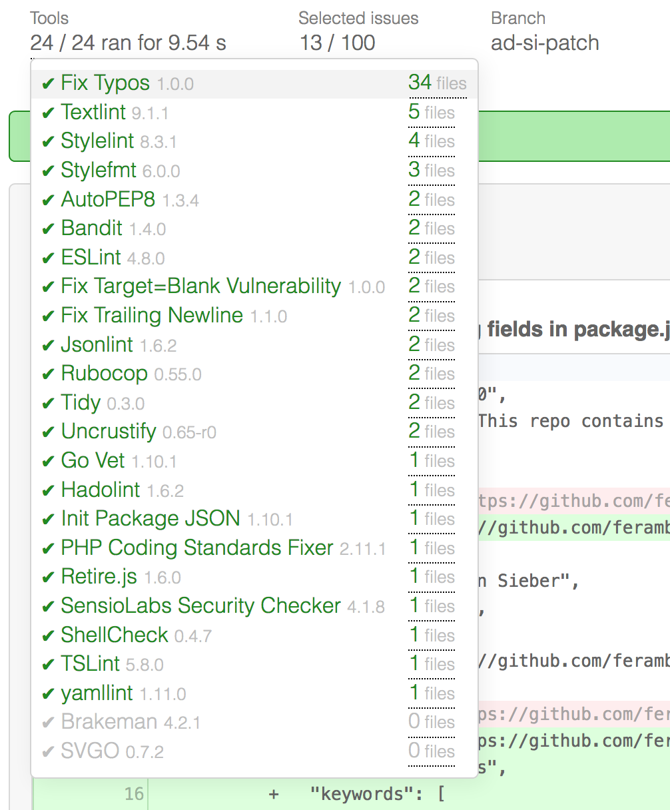

Our Progress in 2018
Until now we haven't been particularly chatty about our progress and the changes we make to Feram on a regular basis. But we're dedicated to improve our communication and in the future we'll keep this blog up to date with accouncements about new features and sprinkle it with interesting posts about various code quality topics.
In order to kick of this new era I'm going to summarize the progress and the changes we made over the last several months.
Running on Docker Swarm
All our code is split into numerous micro-services by now (~ 30 at the moment) which handle all parts of the code checking life cycle. From cloning, to checking the code with one of our numerous code checkers, to committing and pushing the code to the hosting provider.
While this might sound a little overkill, it was necessary to ensure that all code checks can be run in parallel and that we can define tight resource limits for each checking module so that our server won't be overwhelmed by a rogue module.
Bitbucket Support
In addition to our GitHub App we're now providing a Bitbucket Integration. For detailed instructions on how to activate it please check out the tutorial on how to get started on Bitbucket at /help/getting-started-bitbucket.
24 Modules And Counting
We're now supporting 24 code checking modules which leverage numerous open source tools and provide fixes for a plethora of bugs in a diverse set of programming languages. Check out the full list on our features page.
Furthermore we're regularly adding new modules to steadily increase the scope and the depth of our checks. If you want us to support a specific tool, make sure to tell us about it on Twitter!
Improved UI

We incorporated countless smaller changes to our UI in order to give you more information about what issues Feram detected and to streamline the user interaction.
One I want to highlight in particular is our new tools overview, which lists all code quality tools which we used to check the code with detailed information on which version we used and which files were checked.
Fast, Faster, Feram
One of our main advantages in comparison to self hosted code analysis is speed! Due to full parallelization and our always ready code checking modules Feram is exceptionally fast. For an average project it takes us less than 10 seconds to check the complete code base with all of our 24 modules. A build server usually hasn't even booted in that time 💪.
This was the first summary of our advances and we can't wait for the next one 😁. If you want to stay up to date on Feram's progress in the future, please make sure to subscribe to our newsletter below!